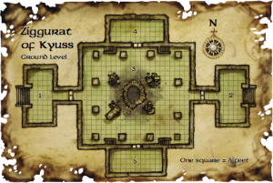
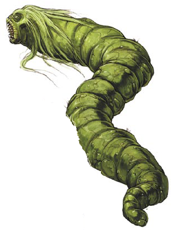
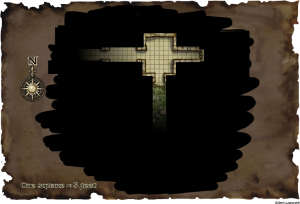

Week 34 - Handling the shaft

Vision: Kyuss the Student
The chamber wavers and shimmers, and suddenly a human man appears at one of the desks nearby. A strange gray-skinned humanoid creature with six arms stands at his shoulder. The man studies a collection of worn and pitted bronze disks arrayed on the desk before him. Faint etchings adorn the plates, and it seems as if the alien figures and symbols writhe together at the behest of some sinister will. The gray creature points to one of the plates, and a look of sudden comprehension blooms on the man’s face. The man, the creature, and the plates then fade away, and are gone.
Vision: The Sundering
The strange dark stain in the air wavers and then grows solid. The peak of the Spire of Long Shadows is restored, and affixed to this peak is a fifteen-foot-tall, three-foot-thick trapezoid-shaped pinnacle of black rock, ten feet wide at the base and five at the peak. The monolith of stone shimmers and vibrates with waves of energy, and something strange and horrible writhes inside its nearly opaque interior. Suddenly, a brilliant red wall of scales fills the view, and there’s a terrible sound of crumbling stone. In an instant, an enormous red dragon is winging away to the north. The spire’s peak is in ruins, and clutched in the dragon’s talons is the monolith. The vision fades, and the dragon and its prize are gone.The party decide to rest before attempting the climb down the shaft in the centre of the main chamber. Their researches in the library indicated that below them were the private chambers of Kuss, and those of the four "Knights of Kyuss". Serious foes, no doubt. The grounds around the ziggurat turn out to be infested with worms, so they cross the barrier to camp outside.
 Next day, the party rise and are soon ready to dare the shaft. With a Hero's Feast and Spider Climb all around, they descend. The walls of the shaft are honeycombed with passages, and three strange nagas attack. They dispel he Spider Climbing on Frith and Jericho, but our heroes have rings of Feather Fall. Frith elects to cast his Repel Vermin and simply drift to the bottom. Flash and Gauthkan, with Feeblemind and hammer respectively destroy the strange nagas.
 As our adventure concludes for the nonce, the party stand in a room filled with kyuss worms, with a 10'-wide clear area centered on Frith.